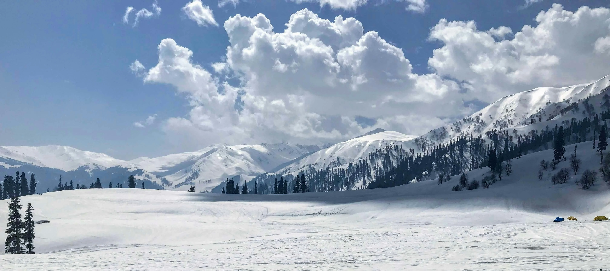
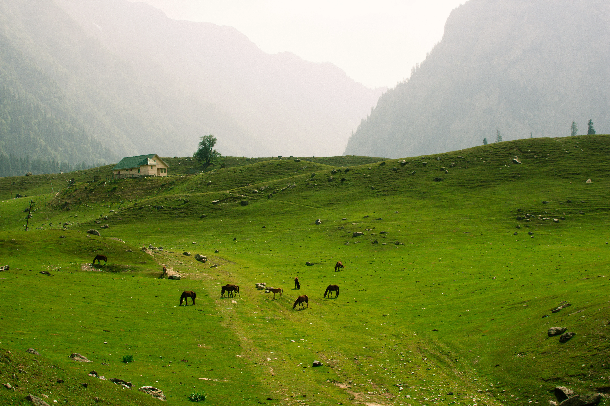
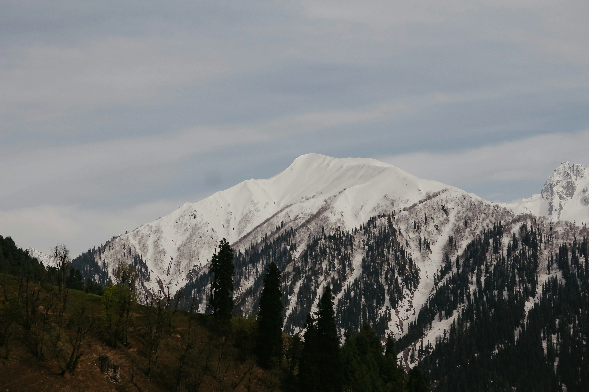
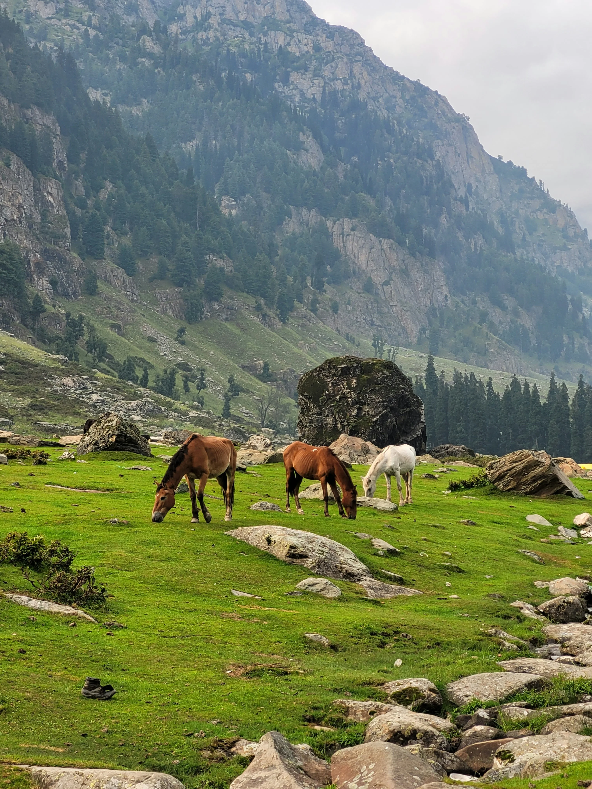
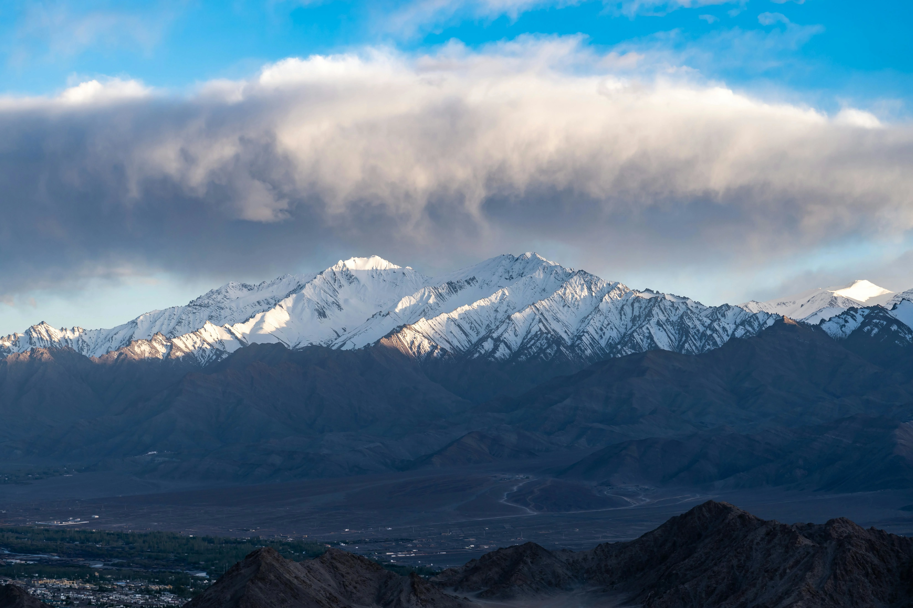

Photography
A Glimpse of Sonmarg
Golden meadows, pristine glaciers, and emerald alpine lakes — Sonmarg is a photographer's paradise.





The Golden Gateway to Adventure — lush meadows, pristine glaciers, and towering peaks 80 km northeast of Srinagar at 2,800 meters.
Located 80 km northeast of Srinagar, Sonamarg — meaning "Meadow of Gold" — sits at an altitude of 2,800 meters. This breathtaking hill station in Jammu & Kashmir is adorned with snow-covered fields, pristine lakes, and towering glaciers that leave travelers spellbound.
Encircled by the Kolhoi and Machoi Glaciers, Sonamarg is home to the iconic Three Sisters of Kashmir Valley. Peaks like Kolhoi, Amarnath, Machoi, and Sirbal make it a sought-after destination for adventure enthusiasts and mountaineers from around the world.
Serving as a base camp for treks to Gangabal, Vishansar, Gadsar, Satsar, and Kishansar lakes, Sonamarg is a paradise for trekkers of all levels. The valley is split by the Thajiwas range — one side featuring lush fir-covered campsites, while the other boasts stunning waterfalls and the mesmerizing Thajiwas Glacier, the region's star attraction.
Sonamarg enchants visitors with lush meadows, alpine lakes, and snow-clad peaks. Its scenic beauty, thrilling treks, and adventure sports make it a perfect getaway for nature lovers and thrill-seekers alike.
Golden meadows, pristine glaciers, and emerald alpine lakes — Sonmarg is a photographer's paradise.




From golden meadows to glacial treks, Sonmarg packs extraordinary beauty into every mile.
The crown jewel of Sonmarg — a stunning glacier reachable by pony or a scenic trek, offering breathtaking views of ice fields even in summer.
Sonmarg serves as base camp for world-class treks to Vishansar, Gangabal, Gadsar, Satsar, and Kishansar lakes through stunning mountain passes.
The Sindh River, which meanders through the valley, offers exciting white water rafting opportunities amid breathtaking Himalayan scenery.
Camp in meadows surrounded by dense fir and pine forests on the Thajiwas side of the valley — perfect for stargazing and nature immersion.
The iconic Three Sisters of Kashmir Valley, along with Kolhoi, Machoi, and Sirbal peaks, create a dramatic Himalayan skyline unlike anywhere else.
From alpine skiing and sledging in winter to angling in pristine streams in summer, Sonmarg delivers thrills across every season.
Sonmarg transforms dramatically with each season — whether you want lush summer meadows or snow-covered winter magic.
The meadows are in full golden bloom. Thajiwas Glacier is accessible, trekking routes open, and the weather is pleasantly cool (5°C–20°C).
Fewer tourists, crisp air, and stunning autumn colours on the hillsides. The valley starts seeing early snowfall by November.
Sonmarg is largely inaccessible by road but magical in snow. Alpine skiing and sledging attract adventurers who reach via helicopter or snowmobile.
Combine your Sonmarg visit with these beautiful Kashmir destinations nearby.




Let us plan your perfect Sonmarg trip — customized itinerary, comfortable stays, and hassle-free travel from Srinagar.